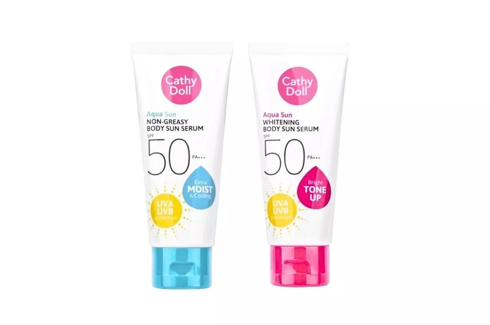

| หน้าแรก | แนะนำสินค้า | ผู้จัดทำ | Rmutp | Sitemap | ติดต่อ | Bus |
|---|
ครีมกันแดดทาตัว Mizumi
ครีมกันแดดทาตัวเนื้อบางเบา ช่วยผลัดเซลล์ผิวให้เรียบเนียนแลดูกระจ่างใส ซึ่ง Mizumi Uv Bright Body Serum เป็นครีมกันแดดที่ผสมผสานระหว่างส่วนประกอบแบบ Hybrid เพื่อการปกป้องดูแล และมี Anti Pollution ช่วยสร้างฟิล์มเคลือบผิว ลดความเสี่ยงในการถูกทำร้ายจากมลภาวะต่างๆ SPF50+ PA++++
ราคา 390 บาท |
|
ครีมกันแดดทาตัว Banana Boat
ครีมกันแดดทาตัว Banana Boat Sport Ultra Sunscreen Lotion มีเนื้อครีมบางเบา ลดการอุดตันในรูขุมขน เหมาะสำหรับใช้ก่อนการทำกิจกรรมกลางแจ้ง หรือเล่นกีฬา ช่วยป้องกันทั้ง UVA และ UVB นอกจากนั้นยังกันน้ำ กันเหงื่อได้อีกด้วย
ราคา 295 บาท |
|
ครีมกันแดดทาตัว Vaseline
Vaseline Healthy Bright Serum เป็นครีมกันแดดทาตัวแบบ Pollution Protection ที่ช่วยปกป้องผิวจากมลภาวะ และรังสียูวี รวมถึงฟื้นฟูผิวให้มีความกระจ่างใส ให้ความรู้สึกเบาสบายด้วยเนื้อครีมแบบเซรั่ม SPF50+ PA+++
ราคา 259 บาท |
|
ครีมกันแดดทาตัว RACHI
ครีมกันแดดทาตัว RACHI BODY BRIGHT UV PROTECTION มีความโดดเด่นในเรื่องเนื้อสัมผัสที่เกลี่ยง่าย ไม่ติดร่องขน มีส่วนประกอบจากธรรมชาติหลายชนิด เช่น Alpine Rose Active, Marshmallow - Eco ช่วยเพิ่มความชุ่มชื้นให้กับผิว ทั้งยังมีส่วนผสมของคอลลาเจน และสาร AQUAXYL ใช้ได้ทุกครั้งก่อนออกแดด
ราคา 125 บาท
|
|
ครีมกันแดดทาตัว NIVEA
ครีมกันแดดทาตัวนีเวีย มี Double UV Protection ปกป้องผิวจากมลภาวะ ฟื้นบำรุง และเติมเต็มความชุ่มชื้นให้กับผิวด้วย 3X Moisturizing Power สามารถออกสู้แสงแดดได้ทันทีหลังใช้งานโดยไม่ต้องทาทิ้งไว้
ราคา 429 บาท
|
|
ครีมกันแดดทาตัว Biore
Biore UV Anti-Pollution Body Care Serum Age Defendse ครีมกันแดดทาตัวที่เป็นมากกว่าการกันแดด เพราะช่วยฟื้นฟูผิวแห้งกร้านที่เกิดจากแดด ทั้งยังมี Anti-Pollution Shield เสมือนเกราะป้องกันผิวจากฝุ่นควัน และสิ่งสกปรกต่างๆ ดูแลล้ำลึกด้วย Hyaluronic acid Vitamin E และ Moisturizing Pack SPF50+ PA+++
ราคา 229 บาท
|
|
ครีมกันแดดทาตัว MYCHOICE
ครีมกันแดดทาตัวไปทะเลจาก MYCHOICE SUN BLOCK มาในรูปแบบหลอดและขวดปั๊ม เนื้อครีมบางเบา ไม่ทิ้งคราบขาว มีส่วนประกอบของ วิตามิน A วิตามิน C วิตามิน E เพื่อการบำรุงผิวอย่างเต็มประสิทธิภาพ ทั้งยังได้รับการดูแลอย่างอ่อนโยน ด้วยสารสกัดธรรมชาติอย่างน้ำมันละหุ่งและว่านหางจระเข้ SPF60 PA+++
ราคา 89 บาท
|
|
ครีมกันแดดทาตัว La Roche-Posay
La Roche-Posay ANTHELIOS INVISIBLE SPRAY คือครีมกันแดดทาตัวที่อยู่ในรูปแบบของสเปรย์ สามารถใช้ได้ทั้งผิวหน้าและผิวตัว มีความบางเบาไม่เหนอะหนะ ช่วยป้องกันผิวจากรังสียูวีและแสงอินฟาเรดได้ กันน้ำ กันเหงื่อ SPF50+ PA++++
ราคา 1,120 บาท
|
|
ครีมกันแดดทาตัว Dr.PONG
ครีมกันแดดทาตัวที่ใช้แล้วผิวดูกระจ่างใสจาก Dr.PONG MirrorX whitening body sunscreen เป็นครีมกันแดดสำหรับทาตัวที่มีเนื้อครีมบางเบา มีส่วนประกอบของสารกันแดดที่ผสมผสานระหว่าง Tinosorb M Tianium Dioxide Zinc Oxide กันน้ำ ไม่เป็นขุย SPF50+ PA++++
ราคา 399 บาท |
|
|  | ครีมกันแดดทาตัว Cathy Doll
ครีมกันแดดทาตัวของ Cathy Doll มีให้เลือกสูตรเย็นและสูตรเพื่อผิวกระจ่างใส ความโดดเด่นของครีมกันแดดทาตัวรุ่นนี้คือเนื้อเจลที่จะแตกตัวเป็น serum น้ำแร่ ซึมซาบเข้าสู่ชั้นผิวได้ง่าย ควรทาก่อนออกแดดอย่างน้อย 15 นาที และทาซ้ำทุก 2-4 ชั่วโมง เพื่อการดูแลและปกป้องที่ดียิ่งขึ้น SPF50 PA+++
ราคา 67 บาท |
ครีมกันแดดทาหน้า Dr.Pong
ครีมกันแดดทาหน้าของ Dr.Pong เหมาะสำหรับผิวของคนที่บอบบางแพ้ง่าย เนื่องจากมีเนื้อสัมผัสบางเบา ไม่เหนอะหนะ ลดสาเหตุของการอุดตันบริเวณชั้นผิว มีคุณสมบัติ ในการปกป้องยาวนานแม้ผ่านไปนานถึง 6 ชั่วโมง โดยขึ้นอยู่กับสภาพผิวและการใช้งาน SPF50 PA+++
ราคา 299 บาท |
|
ครีมกันแดดทาหน้า BREYLEE
BREYLEE อีกหนึ่งครีมกันแดดทาหน้าที่มีส่วนช่วยปกป้องผิว ด้วยสารสกัดจากธรรมชาติอย่างว่านหางจระเข้บาร์บาเดนซิส และอีกมากมาย เช่น ผงมุก ไนอาซินาไมด์ (วิตามันบี 3) ปกป้องยาวนานประมาณ 8 ชั่วโมง SPF50 PA+++
ราคา 115
|
|
ครีมกันแดดทาหน้า Plantnery
หนึ่งในตัวเลือกสำหรับครีมกันแดดทาหน้ายี่ห้อไหนดี อย่าง Plantnery แบรนด์สกินแคร์สัญชาติไทย มีส่วนช่วยในการกระตุ้นเพื่อสร้างเซลล์ผิว ทั้งยังช่วยปกป้องและฟื้นฟูผิวที่ถูกทำร้ายจากรังสียูวี ลดปัญหาฝ้า หรือกระต่างๆ บนใบหน้า อ่อนโยนเพราะปราศจากน้ำหอม สารกันบูด และสีสังเคราะห์ SPF50+ PA++++
ราคา 289 บาท |
|
ครีมกันแดดทาหน้า Kiehl's
Kiehl's แบรนด์สกินแคร์ชั้นนำ ที่ต้องหยิบยกมาเพื่อรีวิวครีมกันแดดทาหน้า เพราะเป็นอีกหนึ่งผลิตภัณฑ์ที่มีส่วนประกอบเพื่อปกป้องดูแลผิวหน้า มีส่วนประกอบของวิตามิน E ซึ่งช่วยลดปัญหาผิวที่เกิดจากสารอนุมูลอิสระ ปราศจากน้ำมัน น้ำหอม และสีสังเคราะห์ ลดการเกิดสารตกค้าง SPF50 PA++++
ราคา 1,290 บาท |
|
ครีมกันแดดทาหน้า Srichand
Srichand หรือที่รู้จักกันดีในชื่อ ‘ศรีจันทร์’ ครีมกันแดดทาหน้าซึ่งมีกระบวนการผลิตด้วยเทคโนโลยีจากประเทศญี่ปุ่น เนื้อสัมผัสบางเบา ไม่ทิ้งคราบ เหมาะสำหรับผู้ที่มีผิวมันหรือผิวผสม SPF50+ PA++++
ราคา 159 บาท |
|
ครีมกันแดดทาหน้า Shiseido
Shiseido หนึ่งในแบรนด์ครีมกันแดดทาหน้ายี่ห้อไหนดีที่ใช้งานได้ในหลายสภาพผิว มีเทคโนโลยี SynchroShield™ ที่ทำหน้าที่เป็นเกราะปกป้องผิว เมื่อพบเจอกับสภาพอากาศร้อนและแสงแดดจัด นอกจากนั้นเมื่อผิวสัมผัสน้ำ หรือเริ่มมีเหงื่อ ก็จะยิ่งช่วยเพิ่มประสิทธิภาพในการดูแลผิวมากขึ้นไปอีกขั้นได้ SPF50+ PA++++
ราคา 1,650 บาท |
|
ครีมกันแดดทาหน้า Biore
ครีมกันแดดทาหน้า Biore ขนาดพกพา เหมาะสำหรับการใช้งานในโอกาสต่างๆ หลากหลาย ซึ่งเป็นสูตร Micro Defense จากประเทศญี่ปุ่น สามารถป้องกันผิวที่อาจโดนทำร้ายได้ นอกจากนั้นยังกันน้ำ กันเหงื่อ ไม่ไหลย้อยระหว่างวัน ปกป้องได้ยาวนานมากขึ้นด้วยนวัตกรรม UV Aqua Jelly Capsule SPF50+ PA++++
ราคา 129 บาท |
|
ครีมกันแดดทาหน้า CLINIQUE
CLINIQUE ครีมกันแดดทาหน้าที่มีส่วนประกอบของสารต้านอนุมูลอิสระ ไม่ว่าจะทำกิจกรรมกลางแจ้ง หรือต้องการปกป้องผิวระหว่างวันก็ใช้งานได้ ไม่มีกลิ่น และไม่เหนียวเหนอะหนะ SPF50 UVA/UVB
ราคา 1,180 บาท |
|
ครีมกันแดดทาหน้า NIVEA
ครีมกันแดดทาหน้า NIVEA ป้องกันผิวที่ถูกทำร้ายจากรังสียูวี ทั้งยังฟื้นฟูผิวให้ดูกระจ่างใสมากขึ้น ซึ่งครีมกันแดดทาหน้านีเวียนี้มีส่วนประกอบของ L- carnitine ช่วยลดความมัน หนึ่งในสาเหตุของการเกิดสิวอุดตันได้ถึง 86% ปกป้องยาวนานไม่มันเยิ้มต่อเนื่อง 8 ชั่วโมง (ขึ้นอยู่กับการใช้งานของแต่ละคน) SPF50+ PA+++
ราคา 518 บาท |
|
ครีมกันแดดทาหน้า La Roche-Posay
ครีมกันแดดทาหน้าจากแบรนด์ La Roche-Posay เหมาะสำหรับผู้ใช้งานที่มีผิวบอบบางแพ้ง่าย หรือมีปัญหาในเรื่องของความมัน ซึ่งเป็นสาเหตุหลักของการเกิดสิว เนื่องจากตัวครีมมีความบางเบา และยังช่วยในการควบคุมความมันบนใบหน้า SPF50+
ราคา 1,260 บาท |
|
ครีมกันแดดทาหน้า MizuMi
ครีมกันแดดทาหน้าที่มีความโดดเด่นในเรื่องของเนื้อสัมผัส แบบ Serum-to-Silk นวัตกรรมที่เปลี่ยนเนื้อครีมเซรั่ม ให้กลายเป็นเนื้อกำมะหยี่เมื่อเซตตัวเข้ากับผิว นวลเนียน ไม่ทิ้งคราบ มาพร้อมกับเทคโนโลยี Very Water Resistant ที่ช่วยให้กันน้ำได้ยาวนานถึง 80 นาที ไม่ว่าจะทำกิจกรรมรูปแบบใด ก็ปกป้องผิวให้กระจ่างใสได้ตลอดวัน SPF50+ PA++++
ราคา 445 บาท |
|
ครีมกันแดดทาหน้า BEAUTY OF JOSEON
ครีมกันแดดทาหน้าที่มีความโดดเด่นในเรื่องของเนื้อสัมผัส แบบ Serum-to-Silk นวัตกรรมที่เปลี่ยนเนื้อครีมเซรั่ม ให้กลายเป็นเนื้อกำมะหยี่เมื่อเซตตัวเข้ากับผิว นวลเนียน ไม่ทิ้งคราบ มาพร้อมกับเทคโนโลยี Very Water Resistant ที่ช่วยให้กันน้ำได้ยาวนานถึง 80 นาที ไม่ว่าจะทำกิจกรรมรูปแบบใด ก็ปกป้องผิวให้กระจ่างใสได้ตลอดวัน SPF50+ PA++++
ราคา 445 บาท |
|
ครีมกันแดดทาหน้า ANESSA
ครีมกันแดดทาหน้าสูตรน้ำนมใช้งานได้ทั้งผิวหน้าและผิวกาย จาก ANESSA มาพร้อมกับ Super Hyaluronic Acid ที่ช่วยมอบความชุ่มชื้นให้กับผิว มีสารสกัดจากธรรมชาติสองชนิด ได้แก่ ดอกกุหลาบ และว่านหางจระเข้ ทั้งยังสามารถเพิ่มประสิทธิภาพในการปกป้องผิวให้ดียิ่งขึ้น ด้วยนวัตกรรม Aqua Booster EX เมื่อสัมผัสกับน้ำหรือเหงื่อ SPF50+ PA++++
ราคา 875 บาท |
|
ครีมกันแดดทาหน้า KA
สำหรับการรีวิวครีมกันแดดทาหน้าจาก KA เป็นหนึ่งในผลิตภัณฑ์ที่มีความบางเบา ไม่ก่อให้เกิดความมัน ทั้งยังมีคุณสมบัติในการดูแลและปกป้องผิวแบบ 5 in 1 ด้วยส่วนประกอบหลากหลายชนิด ป้องกันผิวจากมลภาวะอื่นๆ นอกจากรังสียูวีได้อย่างมีประสิทธิภาพ ไม่ว่าจะเป็นแสงสีฟ้าจากมือถือ คอมพิวเตอร์ หรือความร้อนจากรังสีอินฟาเรด เป็นต้น SPF50+ PA++++
ราคา 209 บาท |
|
ครีมกันแดดทาหน้า innisfree
ครีมกันแดดทาหน้า innisfree เป็นครีมกันแดดที่นอกจากจะสามารถปกป้องผิวจากรังสียูวีได้แล้ว ยังช่วยปรับสภาพผิวให้ดูกระจ่างใส ปราศจากส่วนผสมที่อาจก่อให้เกิดการระคายเคืองหลังใช้งาน (ขึ้นอยู่กับสภาพผิวของแต่ละคน) มาพร้อมกับสูตรกันน้ำที่ถึงจะเจอกับความชื้นก็ไม่ลอก ไม่เยิ้ม SPF50+ PA++++
ราคา 417 บาท |